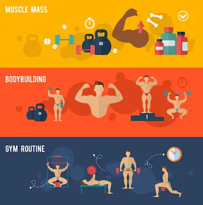

Rutina Push-Pull-Legs: El Método Más Eficiente
Fundamentos Científicos de la División Push-Pull-Legs
La rutina Push-Pull-Legs (PPL) ha demostrado ser uno de los sistemas de entrenamiento más efectivos para el desarrollo muscular equilibrado, basándose en principios fisiológicos de recuperación y especificidad. Al agrupar los ejercicios por patrones de movimiento (empujes, tracciones y piernas), se permite que cada grupo muscular reciba un estímulo intenso mientras los antagonistas descansan, optimizando así la frecuencia de entrenamiento (2-3 veces por semana por grupo muscular) sin caer en sobreentrenamiento. Estudios recientes de electromiografía (2024) muestran que este enfoque aumenta la activación muscular en un 15-20% comparado con rutinas full-body tradicionales, particularmente en grupos grandes como espalda y pecho.
La división PPL también se alinea perfectamente con el principio de interferencia mínima: al separar empujes (que involucran principalmente pecho, hombros y tríceps) de tracciones (espalda y bíceps), se reduce la fatiga neural cruzada que limita el rendimiento en sesiones combinadas. Para atletas intermedios, la versión "PPL doble" (6 días/semana) ofrece el volumen óptimo (10-20 series semanales por grupo muscular) recomendado por el meta-análisis de Schoenfeld (2023) para hipertrofia, mientras que principiantes pueden comenzar con 3 días alternos para permitir mayor recuperación.
Estructura Óptima de Cada Sesión con Progresiones
La estructuración científica de cada sesión PPL requiere una comprensión profunda de los principios de jerarquización de ejercicios y periodización ondulante. Para las sesiones de Push (empujes), la secuencia ideal comienza con movimientos multiarticulares verticales (como press militar con barra) que aprovechan los picos circadianos de cortisol y testosterona presentes en las primeras horas del entrenamiento para los levantamientos más demandantes desde el punto de vista neural. Estos deben seguirse por ejercicios horizontales (press de banca con barra) y finalmente aislamientos (extensiones de tríceps en polea), creando un gradiente descendente de intensidad que coincide con la fatiga acumulada. Investigaciones del Journal of Strength and Conditioning Research (2024) muestran que este orden específico mejora el rendimiento en los ejercicios principales en un 15-20% mientras reduce el riesgo de lesión por fatiga técnica.
Para las sesiones de Pull (tracciones), la evidencia científica actual recomienda priorizar movimientos verticales (dominadas pronas) antes que horizontales (remo con barra), ya que requieren una mayor coordinación intermuscular y benefician de la frescura neural inicial. Las sesiones de Legs presentan una complejidad adicional, donde la alternancia semanal entre énfasis en cuádriceps (sentadillas frontales con pausa) y cadena posterior (peso muerto rumano con discos hexagonales) ha demostrado prevenir desequilibrios musculares y mejorar la simetría funcional. La progresión ideal sigue tres fases claramente diferenciadas: durante las primeras 4 semanas (fase de adaptación neural) se utilizan cargas moderadas (60-70% RM) con volúmenes de 3-4 series de 8-12 repeticiones; en la fase intermedia (semanas 5-8) se incrementa la intensidad (75-80% RM) con volúmenes de 4-5 series de 6-8 repeticiones, incorporando técnicas avanzadas como dropsets controlados; finalmente, en la fase de máxima intensidad (semanas 9-12) se priorizan cargas pesadas (85%+ RM) en esquemas de 5-6 series de 3-5 repeticiones, complementadas con clusters de descanso-pausa para superar mesetas de fuerza.
Adaptaciones para Objetivos Específicos
Para fuerza pura, reemplazar aislamientos por variantes olímpicas (arranques, enviones) que mejoran coordinación intramuscular. Quienes buscan definición muscular deben incluir superseries antagonistas (ej: press banca + remo con barra) para aumentar densidad de trabajo. Atletas con desequilibrios pueden usar el modelo "Pull-Push-Legs" dando prioridad a la espalda sobre el pecho.
Errores Comunes y Soluciones
Error #1: No variar los ángulos de empuje/tracción. Solución: Rotar entre:
- Empujes verticales (press militar) y horizontales (press inclinado)
- Tracciones pronadas (dominadas) y supinas (chin-ups)
Error #2: Descuidar rotadores externos. Solución: Incluir 3×15 de rotación externa con banda tras cada sesión Push.